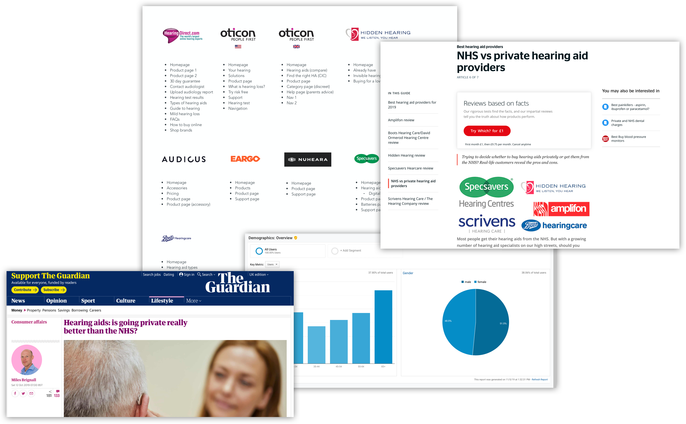
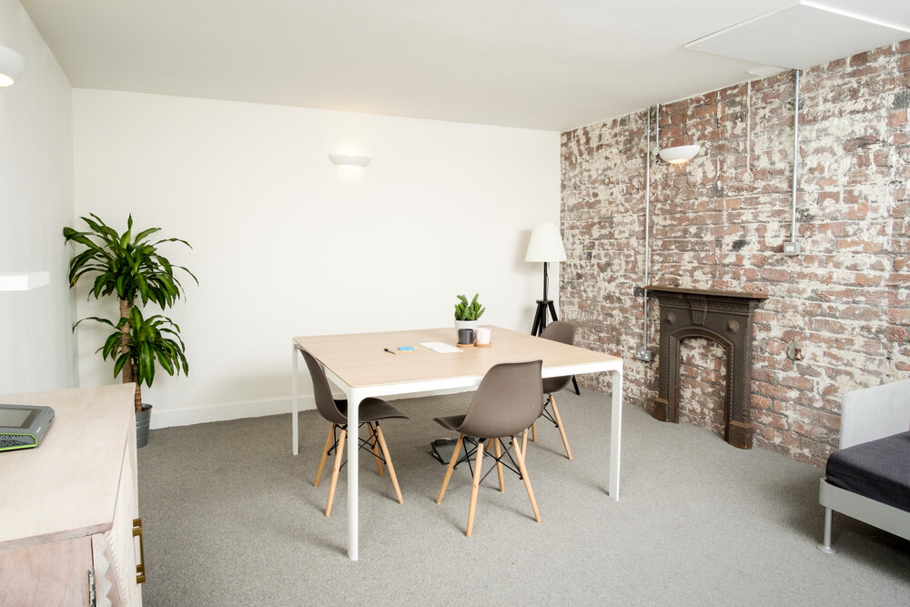

Overview
First piece of research ever done by HD
UK-only
who your likely users are and what they’re trying to do
how they do it currently (for example, what services or channels they use)
the problems or frustrations they experience
what users need from your service to achieve their goal
UK-only
who your likely users are and what they’re trying to do
how they do it currently (for example, what services or channels they use)
the problems or frustrations they experience
what users need from your service to achieve their goal
What we did
- review the HD website
- review analytics
- competitor & sector analysis
- wider research: hearing loss studies, industry papers
- Interviews with Gary & Joan
- discover themes around people’s hearing loss journey
- discover what people use to help them with hearing and how they manage their hearing loss
- discover why people use the products they have and how they might do research online
- brand perception of HearingDirect.com
- discover themes around people’s hearing loss journey
- discover what people use to help them with hearing and how they manage their hearing loss
- discover why people use the products they have and how they might do research online
- brand perception of HearingDirect.com
- Test usability of HD website (explore themes around price, hearing aid types, accessories/assistive products, reviews, refund, HD terminology and content)
- Test new website prototypes/designs
1. Initial desk research
The main output of this stage was a list of assumptions to validate with users
View the working assumptions
View the competitor analysis
View the Gary & Joan interview transcripts

2. Remote user interviews
View the transcripts of the remote interviews

3. Lab research
View the lab session videos

What we've learned
Intro paragraph...
1. Users
Who are our users / personas
2. Main themes
Buying a hearing aid online
There are a number of factors seemingly eroding trust in purchasing a hearing aid online, from skepticism about 'plug-in-and-play', wanting face-to-face audiologist service, to wanting to tanglibly review what is a very personal product.
Pricing
Most users have no real anchor point for the price of hearing aids, particularly if their own experience has been with the NHS.
As Hearing Direct's primary pitch is price, this knowledge gap equates to either shock at the perceived high cost, or skepticism at the lower cost and concerns over quality.
Price-informed users are happy with HD price point.
Website navigation
The navigation labelling and information architecture of the 'Hearing aids' section of the website was a source of confusion for users.
Users were unable to orientate themselves through their journey or effectively compare across ambiguously labelled types.
Website look & feel
To follow...
NHS
All our users had some touch point with the NHS. More research is needed in this space to determine the opportunities for Hearing Direct to alleviate user pain points with the NHS devices & service.
We have users who are not being referred on for a device who may wish to source their own device instead, users who run an NHS device as a backup, and a general theme of not being presented with choice of device type (which has led to them being left unused).
Users also talk of the inconvenience and unreliability of NHS appointments.
Batteries & accessories
to folllow..lDon't know which batteries I use, Subsciption would be useful, pain of going to NHS to get supplies
3. Wider research - key findings
"Evidence suggests that people wait on average 10 years before seeking help for their hearing loss and that when they do, GPs fail to refer 30-45% to NHS audiology services."
- Action on Hearing Loss
This statement highlights a number of opportunities for Hearing Direct:
- That people are either unaware or putting up with hearing issues for far too long - highlight Hearing Loss to those that don’t know they have it.
- That they are in the hands of a GP (working against the backdrop of NHS austerity) as to whether they can begin their journey to better hearing
- The speed, convenience, and simplicity of buying a 'one-size-fits-all' device from Hearing Direct can mitigate these two pain points for users
"More than 40% of people over 50 years old have hearing loss, rising to 71% of people over the age of 70...by 2035, we estimate there'll be around 15.6 million people with hearing loss across the UK - that's one in five"
- Action on Hearing Loss
40% of over-50s is a huge proportion. There is a massive opportunity to tap into this demographic with more age-appropriate messaging, and dispelling the old-age connotations.
It is important that the future brand positioning of Hearing Direct is age agnositc. Our research thus far suggests this younger market are put off by the current brand execution.
More research is needed with this demographic to understand the opportunities to start the conversation with them. Are they aware of their hearing loss?
Thus far all our users have started with a visit to their GP.
"9/10 respondents to our Speak Easy survey said background noise was the biggest problem they face when eating out"
- Action on Hearing Loss
We have seen that people are unaware of the features available in current hearing aid devices. Their selection is purely a marriage of aesthetic and pricing.
There is oppoprtunity to tailor content to specific scenarios and user needs, to make it clear how the technology can help them with specific hearing needs, beyond simply 'making everything louder'.
4. User needs
Intro paragraph...
-
What are my options?
I need:
- help to understand what’s available to me to meet my hearing needs
- a digestible range of choice that doesn't overwhelm me
- to understand the price (and how that compares to what I currently have)
- product names to give me information so that I can compare faster and remember which one I liked
- to easily compare a subset of different hearing aids that would be suitable for me
- to focus on what I’m doing and not be distracted by a million other things
- to know the relevant accessories to maintain and care for a hearing aid
-
How do I know I will be satisfied with my choice?
I need:
- to know that other people would recommend this device and that the recommendation is true (insight: people are sceptical about Trustpilot reviews)
- time to try a new hearing aid so that I don’t waste my money
- confidence to know I can get my money back if something isn’t right
- help paying for something so expensive all at once
- to speak to someone for advice before I feel confident about making a purchase
- advice about using my hearing aid once it’s been delivered
- to make sure I don’t run out of batteries
-
Why should I buy from Hearing Direct and what can I expect from this brand?
I need:
- to know why I would buy a hearing aid, or accessory rather than use the NHS
- to make an emotionally difficult purchase
- to know that other people have had a good experience with this brand
- to understand the full service offered by Hearing Direct
- to understand what different things mean and not be confused by “in the know” language.